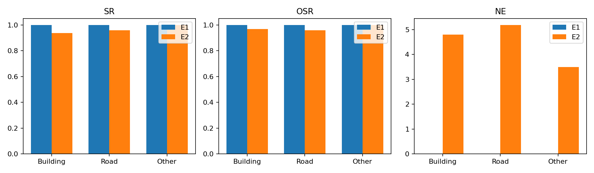
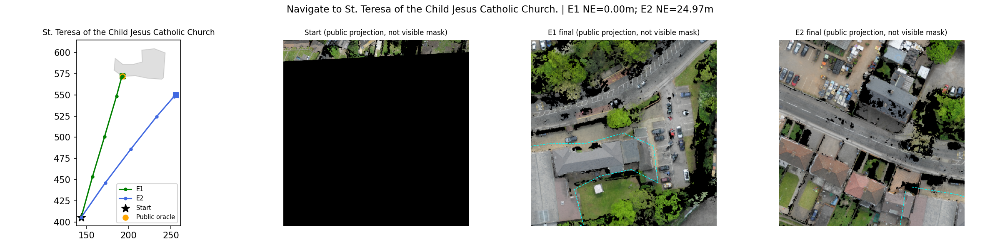
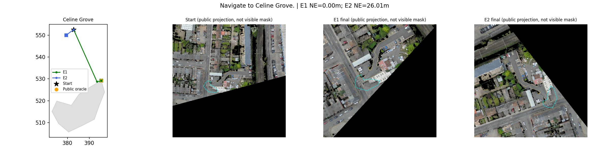
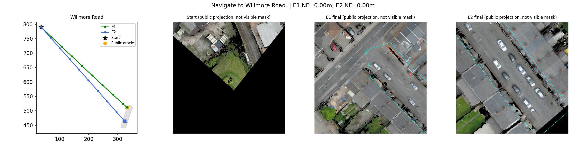
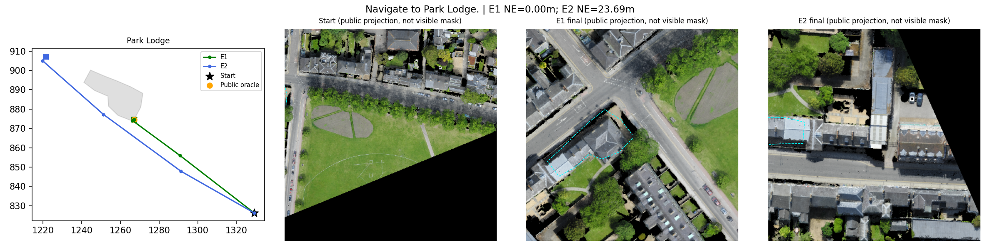
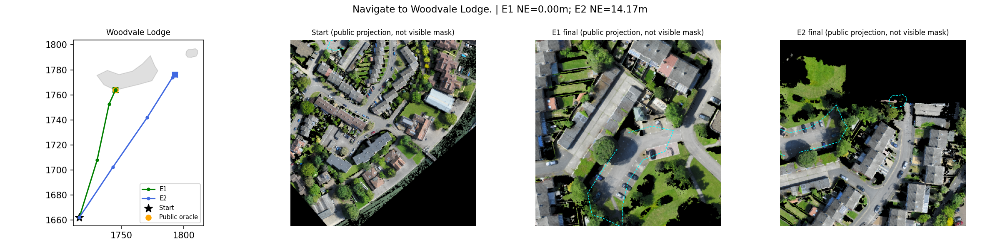
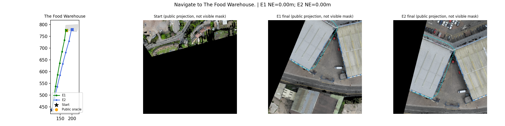

固定64任务；Polygon距离，非官方CityNav SR。青色RGB轮廓仅地图投影，不代表真实可见性。







| 任务 | 地标 | 类别 | E1 SR/NE | E2 SR/NE |
|---|---|---|---|---|
| 0 | Celine Grove | Road | 1/0.00m | 0/26.01m |
| 1 | St. Teresa of the Child Jesus Catholic Church | Building | 1/0.00m | 0/24.97m |
| 2 | The Food Warehouse | Building | 1/0.00m | 1/0.00m |
| 3 | Willmore Road | Road | 1/0.00m | 1/0.00m |
| 4 | Aldridge Road | Road | 1/0.00m | 1/0.00m |
| 5 | Park Hotel | Building | 1/0.00m | 1/1.56m |
| 6 | Nobel Way | Road | 1/0.00m | 1/11.09m |
| 7 | Holford Drive | Road | 1/0.00m | 1/4.48m |
| 8 | Timet | Building | 1/0.00m | 1/16.00m |
| 9 | West Midlands Police Custody Suite | Building | 1/0.00m | 1/6.64m |
| 10 | Penhurst Avenue | Road | 1/0.00m | 1/2.85m |
| 11 | Perry Barr Carpets | Building | 1/0.00m | 1/0.00m |
| 12 | Aston Lane | Road | 1/0.00m | 1/0.00m |
| 13 | NT Wholesale Cash & Carry | Building | 1/0.00m | 1/7.86m |
| 14 | Perry Barr Methodist Church | Building | 1/0.00m | 1/5.30m |
| 15 | Aston Lane | Road | 1/0.00m | 1/13.19m |
| 16 | Aldridge Road | Road | 1/0.00m | 1/0.84m |
| 17 | W. D. M. Cars | Building | 1/0.00m | 1/0.00m |
| 18 | West Midlands Police Custody Suite | Building | 1/0.00m | 1/4.25m |
| 19 | Inglis Building | Building | 1/0.00m | 1/0.00m |
| 20 | James Dyson Building | Building | 1/0.00m | 1/13.13m |
| 21 | Panton Street | Road | 1/0.00m | 1/0.00m |
| 22 | St Peter's Terrace | Other | 1/0.00m | 1/0.00m |
| 23 | Corn Exchange Street | Road | 1/0.00m | 1/5.26m |
| 24 | Maitland Robinson Library | Building | 1/0.00m | 1/2.71m |
| 25 | Sedgwick Building | Building | 1/0.00m | 1/0.00m |
| 26 | The Quadrangle | Other | 1/0.00m | 1/0.00m |
| 27 | Chesterton Road | Road | 1/0.00m | 1/9.46m |
| 28 | Student Castle Cambridge | Building | 1/0.00m | 1/4.91m |
| 29 | Victoria Road | Other | 1/0.00m | 1/0.00m |
| 30 | Catholic Church of Our Lady and the English Martyrs | Building | 1/0.00m | 1/0.00m |
| 31 | Drosier Road | Road | 1/0.00m | 1/9.59m |
| 32 | Gonville Hotel | Building | 1/0.00m | 1/0.00m |
| 33 | Essex House | Building | 1/0.00m | 1/0.00m |
| 34 | Gonville Place | Road | 1/0.00m | 1/6.86m |
| 35 | YMCA | Building | 1/0.00m | 1/3.78m |
| 36 | Adam and Eve Street | Road | 1/0.00m | 1/0.91m |
| 37 | Angel & Blume | Building | 1/0.00m | 1/0.00m |
| 38 | Fitzroy Street | Other | 1/0.00m | 1/0.00m |
| 39 | Park Lodge | Building | 1/0.00m | 0/23.69m |
| 40 | Cambridge Community Kitchen | Building | 1/0.00m | 1/7.72m |
| 41 | Eden Chapel | Building | 1/0.00m | 1/0.00m |
| 42 | Victoria Avenue | Road | 1/0.00m | 1/0.73m |
| 43 | Ferry Path | Road | 1/0.00m | 1/0.53m |
| 44 | Nelson Court | Building | 1/0.00m | 1/13.11m |
| 45 | Collier Road | Road | 1/0.00m | 1/0.00m |
| 46 | Mumford Building | Building | 1/0.00m | 1/0.00m |
| 47 | Petersfield Mansions | Other | 1/0.00m | 1/8.23m |
| 48 | Swinhoe House | Building | 1/0.00m | 1/0.53m |
| 49 | Belvoir Road | Road | 1/0.00m | 1/0.69m |
| 50 | Broadmeadows | Building | 1/0.00m | 1/9.57m |
| 51 | Woodvale Lodge | Other | 1/0.00m | 1/14.17m |
| 52 | Abbey Street | Road | 1/0.00m | 1/6.39m |
| 53 | Beche Road | Other | 1/0.00m | 1/0.35m |
| 54 | Rose and Crown House | Building | 1/0.00m | 1/0.00m |
| 55 | Pound Hill House | Building | 1/0.00m | 1/4.02m |
| 56 | St Peter's Street | Road | 1/0.00m | 1/5.12m |
| 57 | Inglis Building | Building | 1/0.00m | 1/0.00m |
| 58 | Scholars' Garden | Other | 1/0.00m | 1/5.25m |
| 59 | The Fen Causeway | Road | 1/0.00m | 1/12.85m |
| 60 | Fitzwilliam Pharmacy | Building | 1/0.00m | 1/3.67m |
| 61 | Silver Street | Road | 1/0.00m | 1/0.00m |
| 62 | Benson Hall | Building | 1/0.00m | 1/0.00m |
| 63 | Richmond Terrace | Road | 1/0.00m | 1/7.72m |